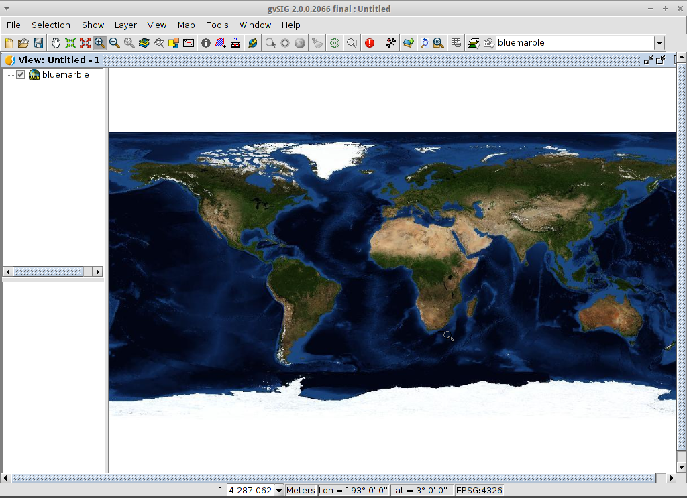

Bemerkung
Das Project ist nur Teil der OSGeoLive Virtual Machine Disk (VMDK)
gvSIG Desktop Quickstart¶
gvSIG ist ein Geographisches Informationssystem (GIS), das heißt, eine Desktopanwendung zum Erfassen, Speichern, Bearbeiten, Analysieren und Veröffentlichen jeglicher Art räumlich referenzierter geographischer Informationen und zum Lösen komplexer Fragestellungen in Verwaltung und Planung. gvSIG ist für seine benutzerfreundliche Bedienoberfläche bekannt, die den Zugriff auf die meisten gängigen Datenformate, sowohl auf Vektor- als auch auf Rasterbasis, ermöglicht. Es bietet eine breite Auswahl an Werkzeugen für die Bearbeitung geographischer Informationen (Abfragewerkzeuge, Layouterstellung, Geoprocessing, Netzwerk, etc.), und ist damit das ideale Werkzeug für alle Anwender aus Fachgebieten in denen raumbezogene Daten eine Rolle spielen.
Inhalt
Bemerkung
Sollte die Benutzetoberfläche nicht mehr reagieren, versuchen Sie Alt+f, um zum Beispiel das Datei-Menü zu öffnen. Die Oberfläche sollte nun wieder reagieren. Dieser Fehler tritt nur auf der OSGeoLive-Distribution auf. Bei normalen gvSIG-Installationen kommt es nicht zu diesem Problem.
Bemerkung
Note for version gvSIG 2.3.1: To load raster files the user must have write permission in the folder where the file is. Otherwise the application will ask for a valid folder (with write permission). Since the „user“ user doesn’t have write permission in the „data“ folder, it will be necessary to select, when asked, a folder where the user does have write permission, like for example, „/home/user“.
gvSIG öffnen und eine Ansicht erstellen¶
Wählen Sie gvSIG im entsprechenden Anwendungsmenü () oder klicken Sie auf das entsprechende Symbol. Die Anwendung benötigt etwa eine Minute um zu starten.
In der Standardeinstellung startet gvSIG mit einem leeren Projekt sowie einer leeren ausgewählten Ansicht. In diesem Fall jedoch startet gvSIG mit einem vorkonfiguriertem Projekt. Klicken Sie auf New Project oder legen sie ein neuse Projekt über an. Sollte eine Nachfrage zur Speicherung des aktuellen Projektes kommen, können diese mit Discard Changes verworfen werden.
Klicken Sie auf den Button New (Neu), um eine Ansicht zu erstellen.

Die Projektion für die Ansicht festlegen¶
Wählen Sie , um den Dialog Eigenschaften Ansicht zu öffnen.

For the Current projection, click on the … button. This will open the New CRS dialog.
Verwenden Sie die Dropdownliste für Type, und wählen Sie EPSG.
Geben Sie den EPSG code für das Koordinatensystem ein. In diesem Beispiel verwenden wir EPSG=4326, dies ist die WGS84 2D Geographic Projection. Klicken Sie dann auf den Button Search (Suchen). Das gesuchte CRS erscheint in der Tabelle unterhalb des Suchfeldes.
Select OK to return to the View Properties dialog. The EPSG code is now 4326 and that the map units have changed to degrees.
Klicken Sie auf :guilabel`OK`, um zum Projektverwalter zurückzukehren.

Das Ansichtsfenster ist in drei Bereiche unterteilt.
(2) The top-left cell contains a list of vector or raster layers being used in the view (i.e. Table-of-Contents).
(3) The bottom-left cell displays the extent of the main view over a selected vector file.
(4) The right cell is the main display area where raster and vector data is rendered.

Add layers to the view¶
Klicken Sie auf Add layer (Layer hinzufügen) in der Hauptwerkzeugleiste um den Layer Hinzufügen Dialog zu öffnen.
Wählen Sie Add (Hinzufügen) im Dialog Layer Hinzufügen. In der Standardeinstellung heißt der erste Reiter File (Datei), somit erscheint der Dialog Öffnen.
Folgen Sie dem Verzeichnisbaum bis zum Verzeichnis
/usr/local/share/data/natural_earth2/Wählen Sie die Dateien, wie in der folgenden Abbildung zu sehen.

Bemerkung
Es werden standardmäßig alle unterstützen Formate angezeigt. Es können Raster- und Vektordaten zusammen ausgewählt werden, in dem man die Taste CRTL gedrückt hält.
Wählen Sie OK um zum vorhergehenden Dialog zu gelangen
Wählen Sie im Layer Hinzufügen Dialog auch hier OK, um zur Hauptansicht zu kommen.
Configure the view display¶
Click on the Maximize icon for a better viewing of the data.
The size of the Table-of-Contents column can be adjusted using the mouse to help see long file names.
In case the raster layer is on the top it should be moved manually to the bottom.

In eine Region zoomen¶
By default the Zoom in tool is selected on the main toolbar.
Use the mouse pointer to draw a bounding box around South-east Australia. Do this by selecting the top-left corner of the bounding box, holding down the left-mouse-button, and dragging the bottom-right corner of the bounding box over the selected area. Release the left-mouse button once you have the approximate area defined.

Change how the layers look¶
Make a polygon transparent¶
Selektieren Sie den Layer
10m_admin_1_states_provinces.shpmit der linken Maustaste und klicken Sie noch einmal mit der rechten Maustaste darauf.Selektieren Sie das Untermenü Eigenschaften.
Der Dialog Layereigenschaften erscheint.
{kind=link}
Change the symbology of a vector layer¶
Wählen Sie den Reiter Symbole im Dialog Layereigenschaften.
Klicken Sie auf [Symbol wählen], um den Symbol-Selektor zu öffnen.
Remove the fill symbol and changing the border color¶
Entfernen Sie den Haken von der Box Farbe der Füllung, um die Polygone transparent darzustellen.
Click on the … close to Border color:.
Choose white as color.
Klicken Sie auf den Button [OK] um zum Dialog Layereigenschaften zurückzukehren.
Klicken Sie auf den Button [OK], um zum Dialog Layereigenschaften zurückzukehren.

Change the labelling of a vector layer¶
Wählen Sie den Reiter Beschriftung im Dialog Layereigenschaften.
Ändern Sie die Texteigenschaften so wie im Beispiel dargestellt. Klicken Sie dann auf den Button [Anwenden].

View the result¶
Beachten Sie, dass dies eine sehr einfache Ansicht ist, die nur jeweils eine Punkt-, Linien- und Polygon-Vektordatei zeigt die einer Rasterdatei überlagert sind. Genau so einfach wäre es, ein Luftbild oder ein Digitales Geländemodell als Hintergrund für Vektordaten zu verwenden, oder andere Vektordaten in unterschiedlichen Formaten anzuzeigen.

Add an overview or locator¶
Select .

Click on the Add layer… button.
Within the Add layer window, click on the Add button.
Select the
HYP_50M_SR_W.tiflayer.Click on the Open button to return to the Add layer window.
Click on the Ok button and close the Configure locator window.

Now we can easily know where the view is located in the world.

Select towns within a region¶
Select the region¶
Selektieren Sie den Layer
10m_admin_1_states_provinces.shpmittels der linken Maustaste.Drücken Sie den Button ‘Auswahl durch Klick’ in der Haupt-Werkzeugleiste.
Klicken Sie in das Polygon, welches den State of Victoria darstellt. Das Polygon wird gelb oder nimmt, je nach Anwendereinstellungen, eine andere Farbe an.

Open the Selection by layer tool¶
Selektieren Sie den Layer
10m_populated_places_simple.shpmittels der linken Maustaste.Wählen Sie
Ansicht > Elemente Auswählen > Auswahl durch Layer, um den Dialog Auswahl durch Layer zu öffnen.

Select the towns contained within a region¶
Ändern Sie die beiden Auswahlkriterien mittels der Dropdown-Felder auf der linken Seite des Dialogs Auswahl durch Layer. Klicken Sie auf den Button [Neuer Datensatz] um Städte innerhalb des gewählten Polygons zu selektieren.
Change the second selection criteria as shown in the picture.
Click the New set button to select towns within the selected polygon.
Wählen Sie den Button [Abbrechen] im Dialog Auswahl durch Layer, um zur Ansicht zurück zu gelangen.

Deselect the polygon so you can see what has happened¶
Selektieren Sie den Layer
10m_admin_1_states_provinces.shpmittels der linken Maustaste.Klicken Sie auf das Symbol ‘Auswahl aufheben’ in der Haupt-Werkzeugleiste.
Sie sehen, dass nur nur Städte innerhalb von Victoria ausgewählt sind.

Export selected features to a new shapefile¶
Select the output file format¶
Selektieren Sie den Layer
10m_populated_places_simple.shpmittels der linken Maustaste.Select to start the export.
Select Shape Format.
Click on Next.

Select the output file name¶
Choose a folder and type the file name.
Click on Open and then on Next.

Reference system¶
Choose the option Original (EPSG:4326) in order to keep the reference system of the view.
Click on Next.
Export options¶
Choose the option Selected features in order to export only the towns of New South Wales.
Click on Export.

View the result¶
The new layer has been added to the view.
In order to check that the export was ok set the original file as invisible. Only the towns of New South Wales should be shown.

Erstellen Sie eine neue Karte und öffnen Sie diese¶
Wählen Sie den Dokumenttyp Karte im Projektverwalter.
Klicken Sie den Button [Neu], um eine Karte zu erstellen.
A new window is shown, where you can select the view to insert on the Map. Select the only view that you have and press Accept.
The map will appear with the view selected.
Work with the map¶
Additional elements like a scale and north arrow can be added to the map using the icons in the main toolbar or with the submenus in the menu.
The map can be printed or exported to PDF or Postscript for incorporation into other works.
Select the Close window icon to return to the Project manager

Save your project or exiting gvSIG¶
Projects can be saved for use later by using the menu option, or
Projects can be exited or closed by using the menu option.

Install an add-on¶
Open the add-ons manager¶
Select . After a while, the Install package window will appear.
Within the Install package window, select the option Installation from URL.
Choose the repo URL shown in the picture.
Click on the Next button.

Find an add-on¶
At the add-ons manager we can find plugins and symbol libraries.
Type ‚Forestry‘ in the Fast filter text box.
Check the add-on called Symbols: Forestry (it’s a symbol library).
Click on Next.

Finish the installation¶
Click on Start downloading.
Then click on Next.
Finally click on Finish.
Although the new message indicates that a restart is needed, for symbol libraries it’s not necessary. We only have to restart when we install plugins.
Add an OpenStreetMap layer¶
Now we are going to add OpenStreetMap cartography. Within a new view, in EPSG 3857, click on the Add layer… button.
Choose the OSM tab.
Select ‚Mapnik‘ from the available layers.
Click on Ok.
{kind=link}
View the result¶
A new layer has been added to the view. Just doing zoom over a region we could see the detailed Open Street Map data.


Add a WMTS layer¶
WMTS is an evolution of WMS OGC standard based on tile management.
Select a server¶
Within a view, click on the Add layer… button.
Choose the WMTS tab.
Choose the URL shown in the picture.
Click on Connect.
Click on Next.

Select one of the available layers¶
Select one of the available layers (e.g. bluemarble)
Click on Add.
Click on Next.

Select image format and reference system¶
Select image/jpeg as image format.
Select EPSG:4326 (notice that the view must have the same SRS. If not then cancel, change it and start again).
Click on Accept.

A new layer has been added to the view.
{kind=link}